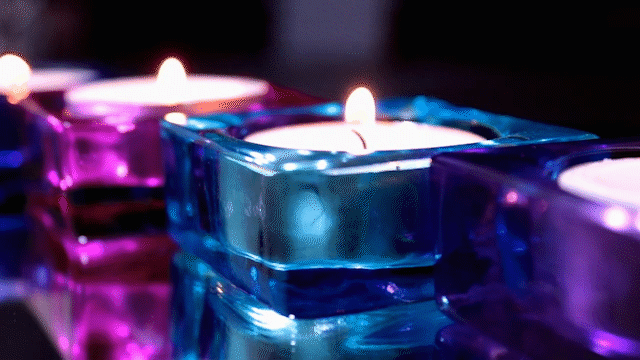

U prvoj vježbi pravili smo vlastiti font. Ovo je slika moga fonta kojeg sam radila u font forge-u.
U drugoj vježbi radili smo s Bezierovim krivuljama. Ovo je link s vježbom u pdf-u. Ovu vježbu sam pravila u Adobe Illustrator-u.
U trećoj vježbi smo također se koristili vektorskom grafikom gdje smo crtali sliku preko već postojeće fotografije i stvarali swatch-eve boja koje smo koristili.
U četvrtoj vježbi pravili smo složene objekte, različitih prozirnosti, gradijenata i segmentacije metodama spajanja ili oduzimanja oblika.
Zatim smo imali projektni zadatak u kojem smo sve obijedinili.
U petoj vježbi smo popravljali oštećenja ili nesavršenosti
na fotografijama. Ovo je sada područje piksel grafike, te sam ja ove vježbe radila u Photoshop-u. Ovdje su dvije slike prije i poslije retuširanja.


U šestoj vježbi smo kolorirali crno-bijelu fotografiju uz pomoć selekcija koje smo pretvarali u maske.

U sedmoj vježbi kombinirali smo elemente različitih fotografija u zajedničku cijelinu. Koristili smo se jednostavnim i složenim tehnikama selektiranja. Nakon stavljanja svih elemenata u jednu fotografiju, korigirali smo boje, zasićenost, svjetlinu i dodavali sjene.

U ovom projektnom zadatku kombinirali smo sve iz prijašnjih vježbi piksel grafike.
U ovoj vježbi obrađivali smo videometerijal i pravili smo kinemagraf čija je karakteristika spajanje statične i pokretne slike. U ovim vježbama obrađivali smo videe i zvuk, a ja sam ih odrađivala u Adobe Premiere-u.
U ovoj vježbi smo obrađivali video i zvuk te dodavali efekte na video i na zvuk.
U ovoj vježbi smo pravili web stranice uz pomoć označnog jezika HTML (Hypertext Markup Language) te ih stilizirali uz pomoć CSS (Cascading Style Sheets) jezika kojim određujemo veličine, pozicije, boje i druge stilske karakteristike sadržaja.Primjer mog zadatka te ujedno i projektnog zadatka su upravo ove stranice :)